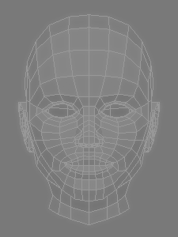
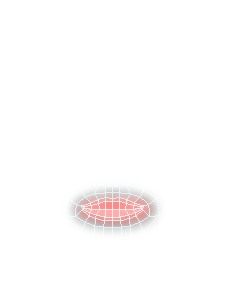
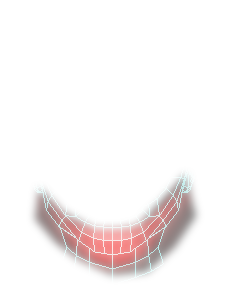
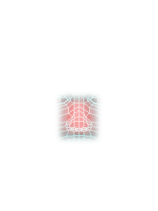
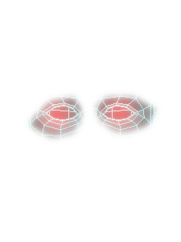
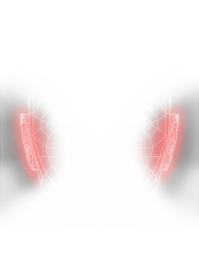

👥 Face Match App: AI Face Comparison Tool
Face Match App is an AI-powered facial comparison tool that analyzes similarity, age, gender, and detailed vector differences between two faces. App can use in criminology, forensic analysis, cosmetic and plastic surgery (highlighting face parts), identity verification, age progression studies, sculpting and 3d modeling (for check precision), security systems, model casting, deepfake detection, and genealogy research. With interactive visuals, graph analytics, and precise similarity scoring, it’s a versatile tool for anyone working with facial data.
Result
Similarity: 0% (The actual vector distance between faces is 0.0*)
* -
The vector distance reflects how close the two images are in a mathematical sense.
A distance between 0 and 0.6 typically indicates the same person.
The percentage value is calibrated to better represent human perception of similarity.






Face higlight treshhold:
Move coursor for make highlight more or less bright
The Graph 1 and Graph 2 display the vector values for Face 1 and Face 2.
The Graph 3 shows the blended vectors for Face 1 and Face 2.
The Graph 4 shows the differences between the vectors of Face 1 and Face 2.
The Graph 3 graph presents the absolute differences between the vectors (without values less than 0).
The Graph 3 shows the blended vectors for Face 1 and Face 2.
The Graph 4 shows the differences between the vectors of Face 1 and Face 2.
The Graph 3 graph presents the absolute differences between the vectors (without values less than 0).
Face 1
Face 2
Face 1 and Face 2
Differences
Differences in absolute value
Face1, Face1 on Face2, Face2 polar diagram
Difference on polar diagram
Save Results